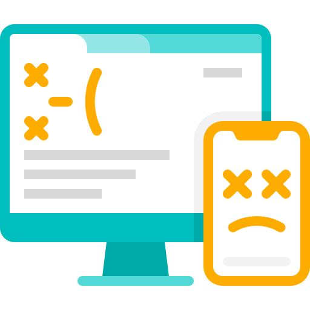

<ion-header>
  <ion-toolbar color="azulA">
    <ion-buttons slot="start" (click)="volver()">
      <ion-icon name="chevron-back-outline"></ion-icon>
    </ion-buttons>
    <ion-title>Bluetooth Acceso Perdomo</ion-title>
    <ion-buttons slot="primary">
      <ion-button (click)="regenerarBluetooth()">
        <ion-icon name="reload-outline"></ion-icon>
      </ion-button>
    </ion-buttons>
  </ion-toolbar>
</ion-header>

<ion-content [fullscreen]="true">
  <ion-list *ngIf="loadingButtonsReaders" class="ion-text-center">
    <ion-progress-bar type="indeterminate" color="azulA"></ion-progress-bar>
    <ion-label>Se estan cargando los dispositivos.</ion-label>
  </ion-list>
  <div *ngIf="buttonReaders == null && !loadingButtonsReaders; then whitOutButtonsReaders else buttonsReadersTemplate"></div>

  <ng-template #buttonsReadersTemplate>
    <div *ngIf="buttonReaders != null">
      <ion-card *ngFor="let button of buttonReaders" class="ion-text-center">
        <ion-card-header>
          <ion-card-title><small>{{button.name}}</small></ion-card-title>
        </ion-card-header>
        <ion-button expand="block" (click)="conectar($event, button.id)">
          Abrir
          <ion-icon slot="end" name="lock-open"></ion-icon>
        </ion-button>
      </ion-card>
    </div>
  </ng-template>
  
  <ng-template #whitOutButtonsReaders>
    
    <p>No tienes buttons readers </p>
  </ng-template>
</ion-content>